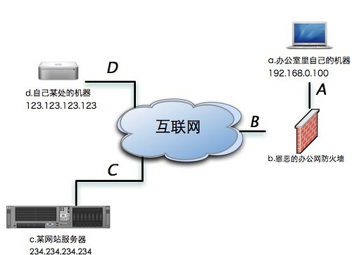

前言
ssh可以说是运维中使用最频繁的工具之一，能灵活应用有时可以轻松的解决很多问题，以下我会列举几个很实用的场景里的用法。
SSH隧道与端口转发及内网穿透
首先，认识下这三个非常强大的命令：
相关参数的解释：
-f: Fork into background after authentication.
后台认证用户/密码，通常和-N连用，不用登录到远程主机。
-L: port:host:hostport
将本地机(客户机)的某个端口转发到远端指定机器的指定端口. 工作原理是这样的, 本地机器上分配了一个 socket 侦听 port 端口, 一旦这个端口上有了连接, 该连接就经过安全通道转发出去, 同时远程主机和 host 的 hostport 端口建立连接. 可以在配置文件中指定端口的转发. 只有 root 才能转发特权端口. IPv6 地址用另一种格式说明: port/host/hostport
-R: port:host:hostport
将远程主机(服务器)的某个端口转发到本地端指定机器的指定端口. 工作原理是这样的, 远程主机上分配了一个 socket 侦听 port 端口, 一旦这个端口上有了连接, 该连接就经过安全通道转向出去, 同时本地主机和 host 的 hostport 端口建立连接. 可以在配置文件中指定端口的转发. 只有用 root 登录远程主机才能转发特权端口. IPv6 地址用另一种格式说明: port/host/hostport
-D: port
指定一个本地机器 “动态的’’ 应用程序端口转发. 工作原理是这样的, 本地机器上分配了一个 socket 侦听 port 端口, 一旦这个端口上有了连接, 该连接就经过安全通道转发出去, 根据应用程序的协议可以判断出远程主机将和哪里连接. 目前支持 SOCKS4 协议, 将充当 SOCKS4 服务器. 只有 root 才能转发特权端口. 可以在配置文件中指定动态端口的转发.
-C: Enable compression.
压缩数据传输。
-N: Do not execute a shell or command.
不执行脚本或命令，通常与-f连用。

- ssh构建跳板隧道
目标:a可以直接访问d,c只允许d访问,现需在a上连接c1ssh -t 123.123.123.123 ssh 234.234.234.234 #首先与d建立连接，并通过此连接c建立ssh连接
注意: 这种方式需要-t参数用来开启一个伪终端，否则没有接受登录c服务器的密码输入界面
- 建立本地SSH隧道
目标:通过中间服务器d映射服务器c的某端口到本地a服务器的某端口
例:将c服务器80端口转发到本地8888端口
这里我们用到了SSH客户端的三个参数，下面我们一一做出解释：
-N 告诉SSH客户端，这个连接不需要执行任何命令。仅仅做端口转发
-f 告诉SSH客户端在后台运行
-L 做本地映射端口，被冒号分割的三个部分含义分别是
需要使用的本地端口号
需要访问的目标机器IP地址（IP: 234.234.234.234）
需要访问的目标机器端口（端口: 80)
最后一个参数是我们用来建立隧道的中间机器的IP地址(IP: 123.123.123.123)
我们再重复一下-L参数的行为。-L X:Y:Z的含义是，将IP为Y的机器的Z端口通过中间服务器映射到本地机器的X端口。
在这条命令成功执行之后，我们已经具有绕过公司防火墙的能力，并且成功访问到了我们喜欢的一个web服务器了。
- 建立远程SSH隧道
目标:在A-B-D方向连接没问题的情况下，通过D-B-A方向连接公司里的服务器a
例:通过公网服务器d本地2222端口远程登录内网服务器a
- 通过SSH隧道建立SOCKS5代理
如果我们需要借助一台中间服务器访问很多资源，一个个映射显然不是高明的办法。幸好，SSH客户端为我们提供了通过SSH隧道建立SOCKS服务器的功能。
通过下面的命令我们可以建立一个通过123.123.123.123的SOCKS服务器。
通过SSH建立的SOCKS服务器使用的是SOCKS5协议，在为应用程序设置SOCKS代理的时候要特别注意。
ssh远程执行本地脚本或命令
|
|
使用 SSH X11 Forwarding
某些时候，你可能想把服务端的 X11 应用程序显示到客户端计算机上，SSH 提供了 -X 选项。但要启用这功能，我们需要做些准备，下面是它的设置：
在服务器端，你需要使 /etc/ssh/ssh_config 文件中的行设置成 ForwardX11 yes 或者 X11Forwad yes，以启用 X11 Forwarding，重启 SSH 服务程序。
然后在客户端，输入 ssh -X user@host:
可信任的 X11 转发
如果你敢肯定你的网络是安全的，那么你可以使用可信任的 X11 转发机制。这意味着远程的 X11 客户端可以完全的访问源 X11 显示内容。要使用此功能，可以使用 -Y 选项。
ssh 通过sshpass自动登录远程主机
OpenSSH 自带的 ssh 客户端程序（也就是 ssh 命令）是不允许你以非交互的方式传递密码，不过可以用于其他手段，如:expect，不过用sshpass更为方便
|
|